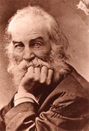

|

|

|
|
|
Renowned American poet and Civil War nurse Walt Whitman was
born on May 31, 1819 in Long Island, New York. He was the
second child of Louisa van Velsor and Walter Whitman, Sr.,
both of them poor farm folk with little formal education and
a diminishing tract of family land. In 1823, the Whitmans
took advantage of an economic boom and moved to Brooklyn,
New York.
There Whitman attended public school, and at the age of
12 he entered the printing trade. Over the next several
years, Whitman worked as a printer, teacher, and eventually
he became a journalist, editing a daily newspaper in New
York at the age of 23. In 1826, Whitman became editor of the
Brooklyn Daily Eagle, but because of his Free Soil
politics, he was dismissed in 1848. After working two more
years as a journalist in New Orleans and New York, Whitman
began built houses and sold real estate with his father from
1850 to 1855.
Throughout all of his years in New York, Whitman read
voraciously and developed a love of theater and opera. And
though he exhibited virtually no literary promise, Whitman
published stories and poems in several newspapers and
magazines. Eventually, he began experimenting with a new
style of poetry and in the spring of 1855, once he had
composed several poems in this new style, Whitman published
the first edition of Leaves of Grass at his own
expense.
The text drew little attention, though Ralph Waldo
Emerson praised it highly in a letter to Whitman. Another
year went by before a revised second edition of Leaves of
Grass was published. It too was a commercial failure.
Following the release of the second edition, Whitman edited
yet another daily newspaper, but he found himself once again
unemployed by the summer of 1859. In 1860, however, a Boston
publisher put out the rearranged and enlarged third edition
of Leaves of Grass, which included Whitman's
"Calamus" poems. In these poems Whitman wrote of an apparent
homosexual love affair, though it is uncertain whether or
not the affair ever actually happened. The publisher went
broke with the onset of the Civil War.
With the start of the war, Whitman composed and published
several poems for recruitment purposes, many of which were
later printed in Drum Taps (1865). When Whitman's
brother was wounded at the battle of Fredericksburg in 1862,
he went to Washington, staying a while in his brother's
hospital camp, and eventually taking a temporary post in the
paymaster's office. Using his spare time to visit wounded
and dying soldiers in the Washington hospitals, Whitman
bought and delivered small gifts to both Confederate and
Union soldiers in an attempt alleviate their mental and
physical suffering.
By mid-1865, the atrocities of the war and the
assassination of President Abraham Lincoln had left Whitman
somewhat disillusioned with life. His changing attitude is
reflected in Drum Taps, released in May of 1865.
Unlike Whitman's earlier oratorical recruitment pieces, this
poetic collection showed a keen awareness of the realities
of war and included his most well-know allegorical poem, "O
Captain, My Captain." In the poem, Whitman eulogizes Lincoln
by using the metaphor of a ship's captain who has died at
the end of a long voyage. The work concludes with one of
Whitman's most famous verses:
My captain does not answer, his lips are pale and still,
My father does not feel my arm, he has no pulse nor
will,
The ship is anchored safe and sound, its voyage closed
and done,
From fearful trip the victor ship comes in with object
won;
Exult, O shores, and ring O bells!
But I, with mournful tread,
Walk the deck my Captain lies,
Fallen cold and dead.
In the fall of 1865, The Sequel to Drum Taps was
published; the collection contained "When Lilacs Last in the
Dooryard Bloom'd," another well-known elegy on President
Abraham Lincoln.
A re-worked fourth edition of Leaves of Grass was
issued in 1867. Whitman's work began finally garnering
recognition, particularly in England, thanks to the writings
of journalists William O'Connor and John Burroughs, and an
English edition of his work edited by William Michael
Rossetti.
Whitman fell ill in 1872, likely due to the emotional
strain that resulted from his ambiguous sexuality. He was
partially paralyzed by a stroke in January 1873, but in May
he was healthy enough journey to his brother's home in
Camden, New Jersey, where his mother died. Due to his
uncertain employment status and ill-health, Whitman decided
to remain with his brother for several years, although by
1879 he was well enough to take an extended trip out West.
In 1881, yet another edition of Leaves of Grass
was published, and it was immediately denounced as immoral
by the Society for the Suppression of Vice. Facing
prosecution, the publisher gave the plates to Whitman, who
printed an author's edition of the book. Thanks to the
publicity generated by this controversy, the book sold much
better than any of the preceding editions and Whitman was
able to buy a cottage in Camden, where he spent the rest of
his life delivering lectures and receiving admirers. In
April of 1888, he suffered another stroke that left him
almost completely incapacitated. Whitman died March 26, 1892
and was buried in a tomb he designed himself.
Source: Joan Waugh, ed., Facts on File Encyclopedia of American
History: Civil War and Reconstruction, 1856 to 1869 (New York: Facts on
File, 2003), 393-394.
|